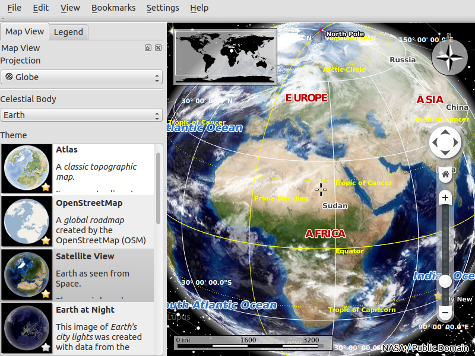
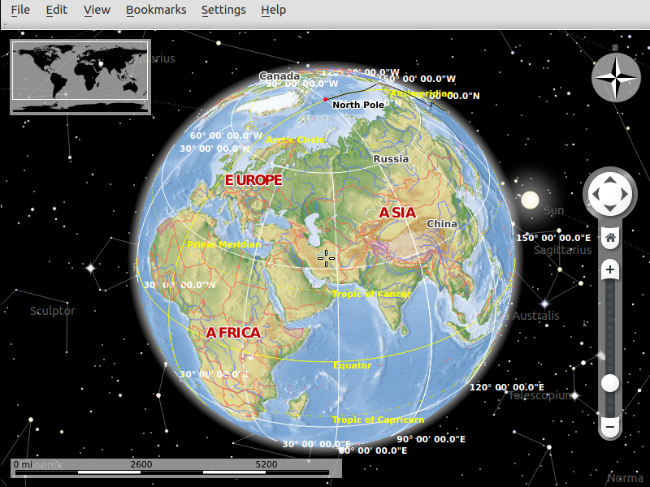
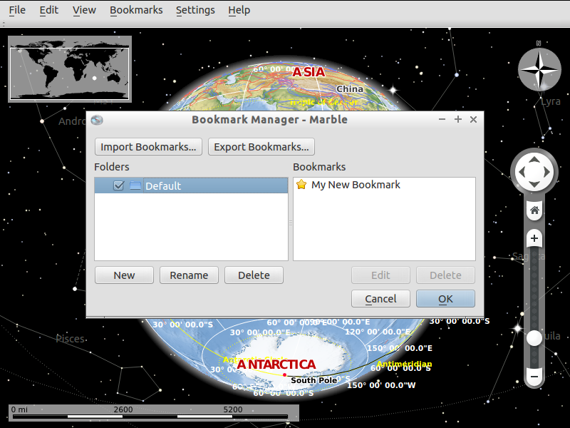

Marble Quickstart¶
Erste Schritte¶
Klicken Sie auf das Desktop-Symbol im Ordner „Navigation und Karten“ um Marble zu öffnen. Sie sehen ein Fenster wie dieses:
{kind=link}
Sie können:
- Skalieren des Globus erfolgt durch drehen des Mausrades. Mit der linken Taste wird der Globus bewegt und gedreht
- Marble hat 11 verschiedene Ansichten:
- Atlas
- OpenStreetMap
- Satelliten-Ansicht
- Erde bei Nacht
- Historische Karte 1689
- Mond
- Einfache Karte
- Niederschlag (Dezember)
- Niederschlag (Juli)
- Temperatur (Dezember)
- Temperatur (Juli).

- Zum Aktivieren klicke auf einen der Einträge im Tab „Kartenansicht“.
- Über den Klick auf eine Beschriftung, werden weitere Informationen ausgegeben.


- Close panels by clicking the cross at the top-right corner of the panel. To close all the panels press „F9“ or go to „Settings->Panels->Hide All Panels“. Also you can show/hide a panel by clicking its title at the „Settings->Panels“ menu.
- To find a location, enter its name into the search line on the top of „Search“ panel. As you start typing, suggestions below the search line will appear like this:

- Use bookmarks in Marble to remember the location of something. To add a bookmark press the left button of your mouse and click „Add bookmark“. After it a window will appear like this:


- Write the name, description and destination folder of the bookmark and click the „Ok“ button. Then the bookmark will appear. To manage bookmarks, go to „Bookmarks->Manage Bookmarks“.
{kind=link}
{kind=link}
{kind=link}
Was Sie versuchen können¶
In der Marble Dokumentation ist die Nutzung des Routings beschrieben.
Was kommt als nächstes?¶
Auf der Marble-Homepage findet Sie weitere Hilfen.